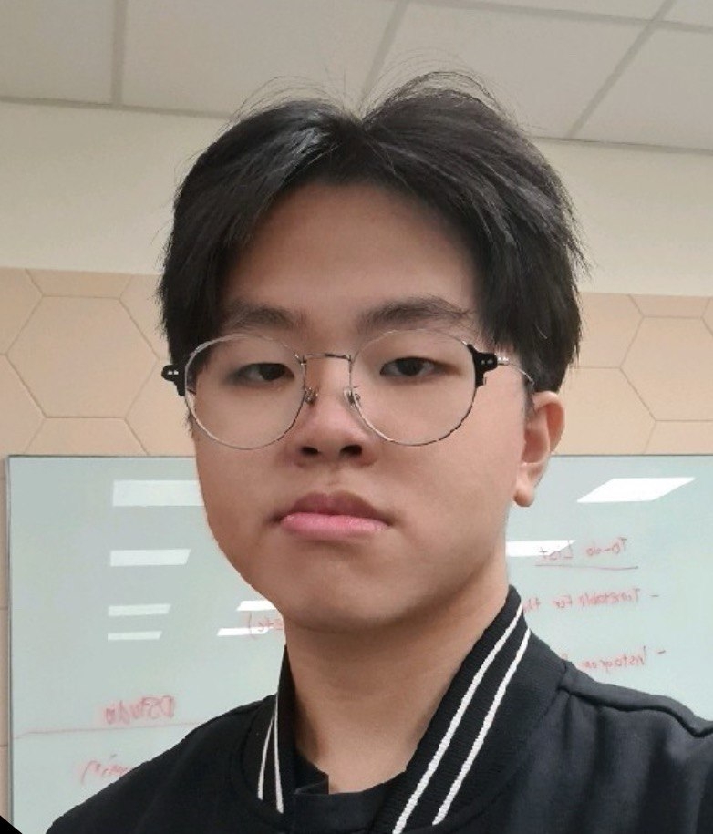

Benjamin Ang Wei Xian
Business Management graduate
About me
Business management in International business & supply chain graduate. I am a hardworking diligent individual who is very interested in how businesses are managed and the future of businesses, especially with the advent of technology. I volunteered at Sunshine home at the Institute of Mental Health that caters to the elderly.
I studied at Hougang Secondary and took GCE O' Levels examination. I also took part in school's volunteering programme to go for voluntary work.
I obtained important skillsets such as microsoft suite programs, Tableau for business analytics in my tertiary education in Nanyang Polytechnic.
I am currently trying to obtain more knowledge in programming and full stack development to widen my skillset.
Education
- Nanyang Polytechnic (2019-2022)
- Hougang Secondary School (2013-2017)
- Xinmin Primary School (2008-2014)
Experience
- DHL
May 2022 to Aug 2022
- Issued export permit
- Coordinating port lanes
- Learnt to use Cargowise
- Invoice clearing, communicating with coloaders
- Nanyang Polytechnic
Feb 2022 to May 2022
- Worked in a 6 person team, "Team Jenga"
- Managed D'Studio, NYP's retail store
- Also managed social media and used social media strategy to boost sales
- Applied supply chain knowledge to restyle the store front
- Binance
Aug 2020 to Aug 2021
- Conducted compliance and regulatory checks on user's account
- Worked with the compliance team and necessary events involved
- Singtel
Sep 2019 to Oct 2019
- Attended the Singtel iphone 11 launch event
- Performed cashiering and inventory management duties
- Provided customer service related queries
- Kerry Logistics
Mar 2018 to Apr 2018
- Loading, unloading, packing and picking in the kerry logistics warehouse
- Prepared the client's electronics necessary for the suntec IT show
- Mothercare SG
Jan 2018 to Jan 2018
- Retail assistant role: replenish stock, attend to customers, crowd control.
- Lazada
Nov 2017 to Dec 2017
- Performed my duties as a warehouse assistant:Picking, packing, logistics.
Skills
- Microsoft Suite
- Tableau analytics program
- Microsoft Power Bi
- Python
- HTML
- CSS
- CRM
- CargoWise
Awards & Certifications